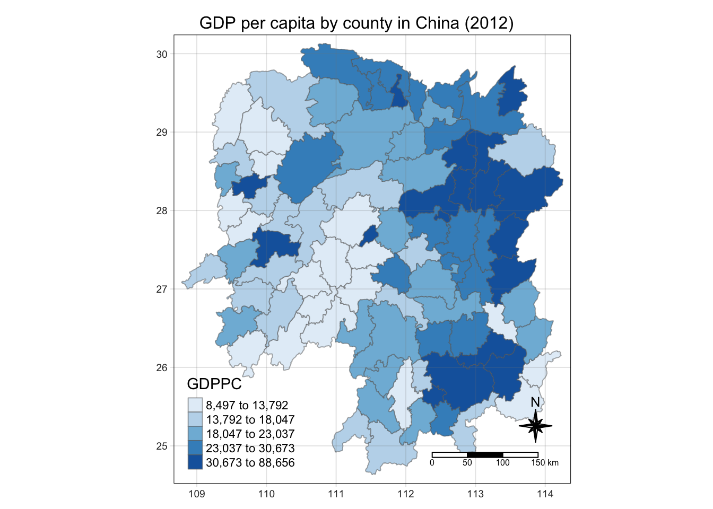

pacman::p_load(sf, sfdep, tmap, tidyverse, knitr)In-class Exercise 2: Spatial Weights with sfdep
Overview
This introduces sfdep functions for getting spatial weights.
Getting Started
Four R packages will be used for this in-class exercise are: sf, sfdep, tmap, tidyverse, and knitr.
sf - for processing geospatial data
sfdep - provides tools Emerging Hot Spot Analysis
tmap - for generating thematic maps
tidyverse - for processing aspatial data
knitr - for generating HTML tables
Preparing the data
Next we move the provided data from E-learn under the data/ directory. We will also create `rds/` directory for saving the calculated data for later use.
Importing the data
First, we will import the geospatial data in shp format.
hunan = st_read(dsn = "data/geospatial",
layer = "Hunan")Reading layer `Hunan' from data source
`/Users/kjcpaas/Documents/Grad School/ISSS624/Project/ISSS624/In-class_Ex2/data/geospatial'
using driver `ESRI Shapefile'
Simple feature collection with 88 features and 7 fields
Geometry type: POLYGON
Dimension: XY
Bounding box: xmin: 108.7831 ymin: 24.6342 xmax: 114.2544 ymax: 30.12812
Geodetic CRS: WGS 84Second, we import the aspatial data Hunan_2012, which contains the GDP Per Capita (GDPPC) of Chinese counties in 2012.
hunan2012 = read_csv("data/aspatial/Hunan_2012.csv")Combining them all together
As seen from the import above, each of the dataframes have 88 rows each. Each row corresponds to a record per county.
However, we are already interested in the following columns:
County
GDPPC
hunan <- left_join(hunan, hunan2012)%>%
select(7, 15)
Note
We do not need to specify the columns to join as both dataframes have the County column so left_join() is able to detect that this is the column to join by.
Plotting a choropleth map
Next is to plot the map of GDP per capita values.
tmap_mode("plot")
tm_shape(hunan) +
tm_fill("GDPPC",
style = "quantile",
palette = "Blues",
title = "GDPPC") +
tm_borders(alpha = 0.5) +
tm_layout(main.title = "GDP per capita by county in China (2012)",
main.title.position = "center",
main.title.size = 1.0,
legend.height = 0.35,
legend.width = 0.35,
frame = TRUE) +
tm_compass(type="8star", size = 2) +
tm_scale_bar() +
tm_grid(alpha =0.2)
Deriving Contiguity Spatial Weights
In deriving contiguity neighbors, st_contiguity() is used.
Identifying neighbors via Queen’s method
Important
st_continguity() used queen = TRUE as default. If not specified, it will use the Queen’s method.
nb_queen <- hunan %>%
mutate(nb = st_contiguity(geometry),
.before = 1)
summary(nb_queen)Neighbour list object:
Number of regions: 88
Number of nonzero links: 448
Percentage nonzero weights: 5.785124
Average number of links: 5.090909
Link number distribution:
1 2 3 4 5 6 7 8 9 11
2 2 12 16 24 14 11 4 2 1
2 least connected regions:
30 65 with 1 link
1 most connected region:
85 with 11 links nb County GDPPC geometry
NULL:NULL Length:88 Min. : 8497 POLYGON :88
Class :character 1st Qu.:14566 epsg:4326 : 0
Mode :character Median :20433 +proj=long...: 0
Mean :24405
3rd Qu.:27224
Max. :88656 To prettify the output of head(), we can use kable.
kable(head(nb_queen,
n=10))| nb | County | GDPPC | geometry |
|---|---|---|---|
| 2, 3, 4, 57, 85 | Anxiang | 23667 | POLYGON ((112.0625 29.75523… |
| 1, 57, 58, 78, 85 | Hanshou | 20981 | POLYGON ((112.2288 29.11684… |
| 1, 4, 5, 85 | Jinshi | 34592 | POLYGON ((111.8927 29.6013,… |
| 1, 3, 5, 6 | Li | 24473 | POLYGON ((111.3731 29.94649… |
| 3, 4, 6, 85 | Linli | 25554 | POLYGON ((111.6324 29.76288… |
| 4, 5, 69, 75, 85 | Shimen | 27137 | POLYGON ((110.8825 30.11675… |
| 67, 71, 74, 84 | Liuyang | 63118 | POLYGON ((113.9905 28.5682,… |
| 9, 46, 47, 56, 78, 80, 86 | Ningxiang | 62202 | POLYGON ((112.7181 28.38299… |
| 8, 66, 68, 78, 84, 86 | Wangcheng | 70666 | POLYGON ((112.7914 28.52688… |
| 16, 17, 19, 20, 22, 70, 72, 73 | Anren | 12761 | POLYGON ((113.1757 26.82734… |
Identifying neighbors via Rook’s method
We do the same for the Rook’s method. This time, we need to supply queen = FALSE to st_contiguity().
nb_rook <- hunan %>%
mutate(nb = st_contiguity(geometry, queen = FALSE),
.before = 1)
summary(nb_rook)Neighbour list object:
Number of regions: 88
Number of nonzero links: 440
Percentage nonzero weights: 5.681818
Average number of links: 5
Link number distribution:
1 2 3 4 5 6 7 8 9 10
2 2 12 20 21 14 11 3 2 1
2 least connected regions:
30 65 with 1 link
1 most connected region:
85 with 10 links nb County GDPPC geometry
NULL:NULL Length:88 Min. : 8497 POLYGON :88
Class :character 1st Qu.:14566 epsg:4326 : 0
Mode :character Median :20433 +proj=long...: 0
Mean :24405
3rd Qu.:27224
Max. :88656 kable(head(nb_rook,
n=10))| nb | County | GDPPC | geometry |
|---|---|---|---|
| 3, 4, 57, 85 | Anxiang | 23667 | POLYGON ((112.0625 29.75523… |
| 57, 58, 78, 85 | Hanshou | 20981 | POLYGON ((112.2288 29.11684… |
| 1, 4, 5, 85 | Jinshi | 34592 | POLYGON ((111.8927 29.6013,… |
| 1, 3, 5, 6 | Li | 24473 | POLYGON ((111.3731 29.94649… |
| 3, 4, 6, 85 | Linli | 25554 | POLYGON ((111.6324 29.76288… |
| 4, 5, 69, 75, 85 | Shimen | 27137 | POLYGON ((110.8825 30.11675… |
| 67, 71, 74, 84 | Liuyang | 63118 | POLYGON ((113.9905 28.5682,… |
| 9, 46, 47, 56, 78, 80, 86 | Ningxiang | 62202 | POLYGON ((112.7181 28.38299… |
| 8, 66, 68, 78, 84, 86 | Wangcheng | 70666 | POLYGON ((112.7914 28.52688… |
| 16, 19, 20, 22, 70, 72, 73 | Anren | 12761 | POLYGON ((113.1757 26.82734… |
Identifying higher-order contiguity neighbors
This simply means neighbors of neighbors.
nb2_queen <- hunan %>%
mutate(nb = st_contiguity(geometry),
nb2 = st_nb_lag_cumul(nb, 2),
.before = 1)
summary(nb2_queen)Neighbour list object:
Number of regions: 88
Number of nonzero links: 448
Percentage nonzero weights: 5.785124
Average number of links: 5.090909
Link number distribution:
1 2 3 4 5 6 7 8 9 11
2 2 12 16 24 14 11 4 2 1
2 least connected regions:
30 65 with 1 link
1 most connected region:
85 with 11 links
Neighbour list object:
Number of regions: 88
Number of nonzero links: 1324
Percentage nonzero weights: 17.09711
Average number of links: 15.04545
Link number distribution:
5 7 8 9 10 11 12 13 14 15 16 17 18 19 20 21 22 23 24 26 28 33
2 1 6 4 5 4 8 5 10 4 4 8 4 8 5 2 2 1 2 1 1 1
2 least connected regions:
30 88 with 5 links
1 most connected region:
56 with 33 links nb nb2 County GDPPC geometry
NULL:NULL NULL:NULL Length:88 Min. : 8497 POLYGON :88
Class :character 1st Qu.:14566 epsg:4326 : 0
Mode :character Median :20433 +proj=long...: 0
Mean :24405
3rd Qu.:27224
Max. :88656 kable(head(nb2_queen))| nb | nb2 | County | GDPPC | geometry |
|---|---|---|---|---|
| 2, 3, 4, 57, 85 | 2, 3, 4, 5, 6, 32, 56, 57, 58, 64, 69, 75, 76, 78, 85 | Anxiang | 23667 | POLYGON ((112.0625 29.75523… |
| 1, 57, 58, 78, 85 | 1, 3, 4, 5, 6, 8, 9, 32, 56, 57, 58, 64, 68, 69, 75, 76, 78, 85 | Hanshou | 20981 | POLYGON ((112.2288 29.11684… |
| 1, 4, 5, 85 | 1, 2, 4, 5, 6, 32, 56, 57, 69, 75, 78, 85 | Jinshi | 34592 | POLYGON ((111.8927 29.6013,… |
| 1, 3, 5, 6 | 1, 2, 3, 5, 6, 57, 69, 75, 85 | Li | 24473 | POLYGON ((111.3731 29.94649… |
| 3, 4, 6, 85 | 1, 2, 3, 4, 6, 32, 56, 57, 69, 75, 78, 85 | Linli | 25554 | POLYGON ((111.6324 29.76288… |
| 4, 5, 69, 75, 85 | 1, 2, 3, 4, 5, 32, 53, 55, 56, 57, 69, 75, 78, 85 | Shimen | 27137 | POLYGON ((110.8825 30.11675… |
Deriving Contiguity Weights
This introduces the st_weights() function from sfdep to calculate spatial weights.
wm_q <- hunan %>%
mutate(nb = st_contiguity(geometry),
wt = st_weights(nb,
style = "W"),
.before = 1)
wm_qSimple feature collection with 88 features and 4 fields
Geometry type: POLYGON
Dimension: XY
Bounding box: xmin: 108.7831 ymin: 24.6342 xmax: 114.2544 ymax: 30.12812
Geodetic CRS: WGS 84
First 10 features:
nb
1 2, 3, 4, 57, 85
2 1, 57, 58, 78, 85
3 1, 4, 5, 85
4 1, 3, 5, 6
5 3, 4, 6, 85
6 4, 5, 69, 75, 85
7 67, 71, 74, 84
8 9, 46, 47, 56, 78, 80, 86
9 8, 66, 68, 78, 84, 86
10 16, 17, 19, 20, 22, 70, 72, 73
wt
1 0.2, 0.2, 0.2, 0.2, 0.2
2 0.2, 0.2, 0.2, 0.2, 0.2
3 0.25, 0.25, 0.25, 0.25
4 0.25, 0.25, 0.25, 0.25
5 0.25, 0.25, 0.25, 0.25
6 0.2, 0.2, 0.2, 0.2, 0.2
7 0.25, 0.25, 0.25, 0.25
8 0.1428571, 0.1428571, 0.1428571, 0.1428571, 0.1428571, 0.1428571, 0.1428571
9 0.1666667, 0.1666667, 0.1666667, 0.1666667, 0.1666667, 0.1666667
10 0.125, 0.125, 0.125, 0.125, 0.125, 0.125, 0.125, 0.125
County GDPPC geometry
1 Anxiang 23667 POLYGON ((112.0625 29.75523...
2 Hanshou 20981 POLYGON ((112.2288 29.11684...
3 Jinshi 34592 POLYGON ((111.8927 29.6013,...
4 Li 24473 POLYGON ((111.3731 29.94649...
5 Linli 25554 POLYGON ((111.6324 29.76288...
6 Shimen 27137 POLYGON ((110.8825 30.11675...
7 Liuyang 63118 POLYGON ((113.9905 28.5682,...
8 Ningxiang 62202 POLYGON ((112.7181 28.38299...
9 Wangcheng 70666 POLYGON ((112.7914 28.52688...
10 Anren 12761 POLYGON ((113.1757 26.82734...Distance-based weights
Deriving fixed-distance weights
First is to determine the upper limit for the distance for the nearest neigbor.
geo <- sf::st_geometry(hunan)
nb <- st_knn(geo, longlat = TRUE)
dists <- unlist(st_nb_dists(geo, nb))summary(dists) Min. 1st Qu. Median Mean 3rd Qu. Max.
21.56 29.11 36.89 37.34 43.21 65.80 We use the max value of the result, 65.80. For simplicity, let’s set it to 66.
Now we can calculate the fixed-distance weights.
wm_fd <- hunan %>%
mutate(nb = st_dist_band(geometry,
upper = 66),
wt = st_weights(nb),
.before = 1)
wm_fdSimple feature collection with 88 features and 4 fields
Geometry type: POLYGON
Dimension: XY
Bounding box: xmin: 108.7831 ymin: 24.6342 xmax: 114.2544 ymax: 30.12812
Geodetic CRS: WGS 84
First 10 features:
nb
1 2, 3, 4, 5, 57, 64
2 1, 57, 58, 78, 85
3 1, 4, 5, 57
4 1, 3, 5, 6
5 1, 3, 4, 6, 69
6 4, 5, 69
7 67, 71, 84
8 9, 46, 47, 78, 80
9 8, 46, 66, 68, 84, 86
10 16, 20, 22, 70, 72, 73
wt County
1 0.1666667, 0.1666667, 0.1666667, 0.1666667, 0.1666667, 0.1666667 Anxiang
2 0.2, 0.2, 0.2, 0.2, 0.2 Hanshou
3 0.25, 0.25, 0.25, 0.25 Jinshi
4 0.25, 0.25, 0.25, 0.25 Li
5 0.2, 0.2, 0.2, 0.2, 0.2 Linli
6 0.3333333, 0.3333333, 0.3333333 Shimen
7 0.3333333, 0.3333333, 0.3333333 Liuyang
8 0.2, 0.2, 0.2, 0.2, 0.2 Ningxiang
9 0.1666667, 0.1666667, 0.1666667, 0.1666667, 0.1666667, 0.1666667 Wangcheng
10 0.1666667, 0.1666667, 0.1666667, 0.1666667, 0.1666667, 0.1666667 Anren
GDPPC geometry
1 23667 POLYGON ((112.0625 29.75523...
2 20981 POLYGON ((112.2288 29.11684...
3 34592 POLYGON ((111.8927 29.6013,...
4 24473 POLYGON ((111.3731 29.94649...
5 25554 POLYGON ((111.6324 29.76288...
6 27137 POLYGON ((110.8825 30.11675...
7 63118 POLYGON ((113.9905 28.5682,...
8 62202 POLYGON ((112.7181 28.38299...
9 70666 POLYGON ((112.7914 28.52688...
10 12761 POLYGON ((113.1757 26.82734...Calculate inverse distance weights
wm_idw <- hunan %>%
mutate(nb = st_contiguity(geometry),
wts = st_inverse_distance(nb, geometry,
scale = 1,
alpha = 1),
.before = 1)
wm_idwSimple feature collection with 88 features and 4 fields
Geometry type: POLYGON
Dimension: XY
Bounding box: xmin: 108.7831 ymin: 24.6342 xmax: 114.2544 ymax: 30.12812
Geodetic CRS: WGS 84
First 10 features:
nb
1 2, 3, 4, 57, 85
2 1, 57, 58, 78, 85
3 1, 4, 5, 85
4 1, 3, 5, 6
5 3, 4, 6, 85
6 4, 5, 69, 75, 85
7 67, 71, 74, 84
8 9, 46, 47, 56, 78, 80, 86
9 8, 66, 68, 78, 84, 86
10 16, 17, 19, 20, 22, 70, 72, 73
wts
1 0.01526149, 0.03515537, 0.02176677, 0.02836978, 0.01029857
2 0.01526149, 0.01601100, 0.01911052, 0.02327058, 0.01591694
3 0.03515537, 0.04581089, 0.04116397, 0.01208437
4 0.02176677, 0.04581089, 0.04637578, 0.01585302
5 0.04116397, 0.04637578, 0.01896212, 0.01351099
6 0.01585302, 0.01896212, 0.02710909, 0.01140718, 0.01080890
7 0.01621067, 0.01536702, 0.01133628, 0.01836488
8 0.01930410, 0.02675555, 0.02151751, 0.01076895, 0.02608065, 0.01519804, 0.01337412
9 0.01930410, 0.01651371, 0.01798519, 0.01473155, 0.03015561, 0.01612293
10 0.02737233, 0.01390810, 0.01458881, 0.02156771, 0.02419268, 0.02350470, 0.01784174, 0.01621545
County GDPPC geometry
1 Anxiang 23667 POLYGON ((112.0625 29.75523...
2 Hanshou 20981 POLYGON ((112.2288 29.11684...
3 Jinshi 34592 POLYGON ((111.8927 29.6013,...
4 Li 24473 POLYGON ((111.3731 29.94649...
5 Linli 25554 POLYGON ((111.6324 29.76288...
6 Shimen 27137 POLYGON ((110.8825 30.11675...
7 Liuyang 63118 POLYGON ((113.9905 28.5682,...
8 Ningxiang 62202 POLYGON ((112.7181 28.38299...
9 Wangcheng 70666 POLYGON ((112.7914 28.52688...
10 Anren 12761 POLYGON ((113.1757 26.82734...Reflections
I’m getting the hang of the basic steps in data wrangling. However, I still need to have the tmap documentation open to plot maps.
The sfdep functions indeed simplified the process of calculating Spatial weights.
Lastly, I copy-pasted most of the code here as I already spent 3 hours per day the last week on the Hand-on Exercises. It’s too much effort for the same learning. I’d rather use my time to work on the Take-home Exercise or the next lesson.
I still needed to fix the code as variable names differed from part to part so I wasn’t mindlessly copy-pasting despite spending less time.